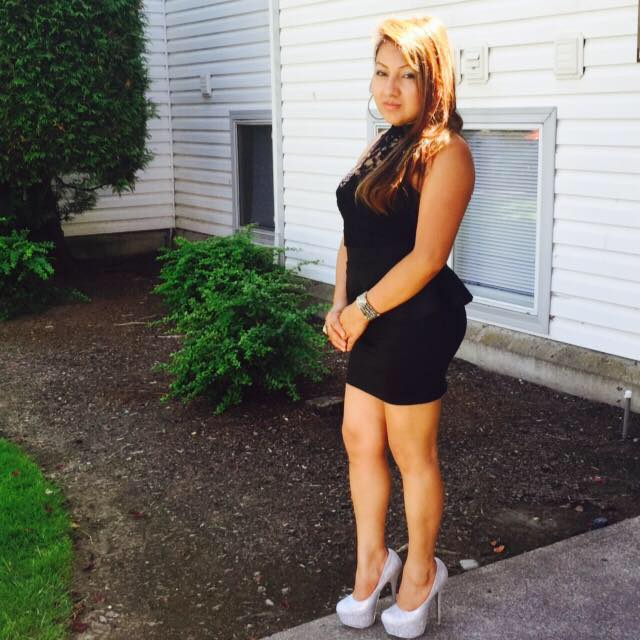
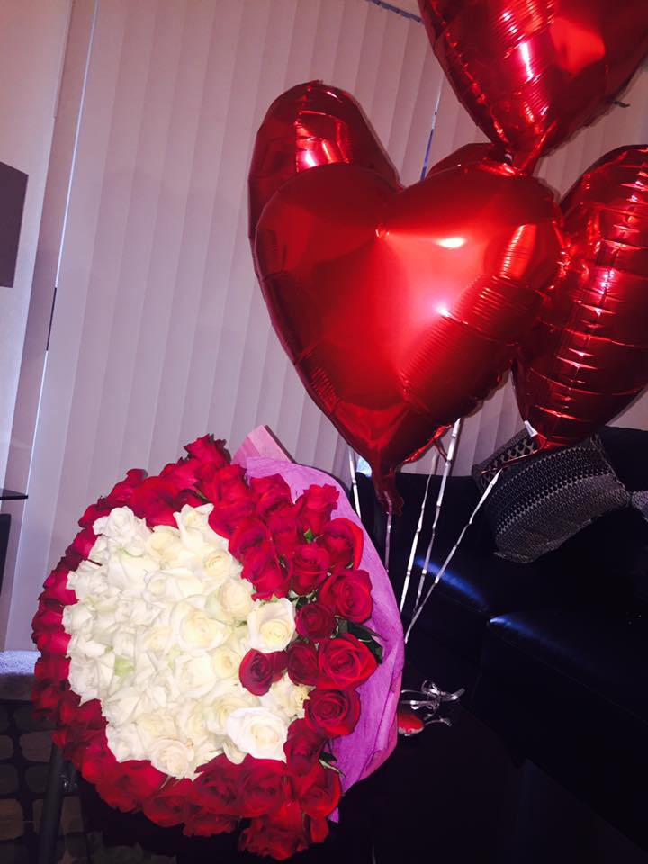

Decorations Lulu
 
Exlpore
Bio:Contact info
Likes: Things I like to do is always being outside. I like to go longboarding along the beach here in Seattle. I wanna go out and enjoy the company of everyone. Finding things to do with my friends
Dislikes: I don't like being at home. Something I also really dislike is being in the dark or in small spaces.
Goals: My goal is to one day be able to attend a university and have a good career. Right now I am focusing on coding, trying to one day become a software engineer. My parents immigrated here from mexico and they never had the opportunity's I have today. I would like to help give back one day everything they have done for me.
Recent Projects:
Paddle ball Project
Last week, Me and two other people had to make a game in Scratch, we decided to make paddle ball. To build it, I learned about storyboarding, graphic design and using the concepts of functions, loops, conditionals, and variables. Check it out below.

Contact info: Email: joseline.martinez6251@gmail.com, Fallow me @MAR71N3Z